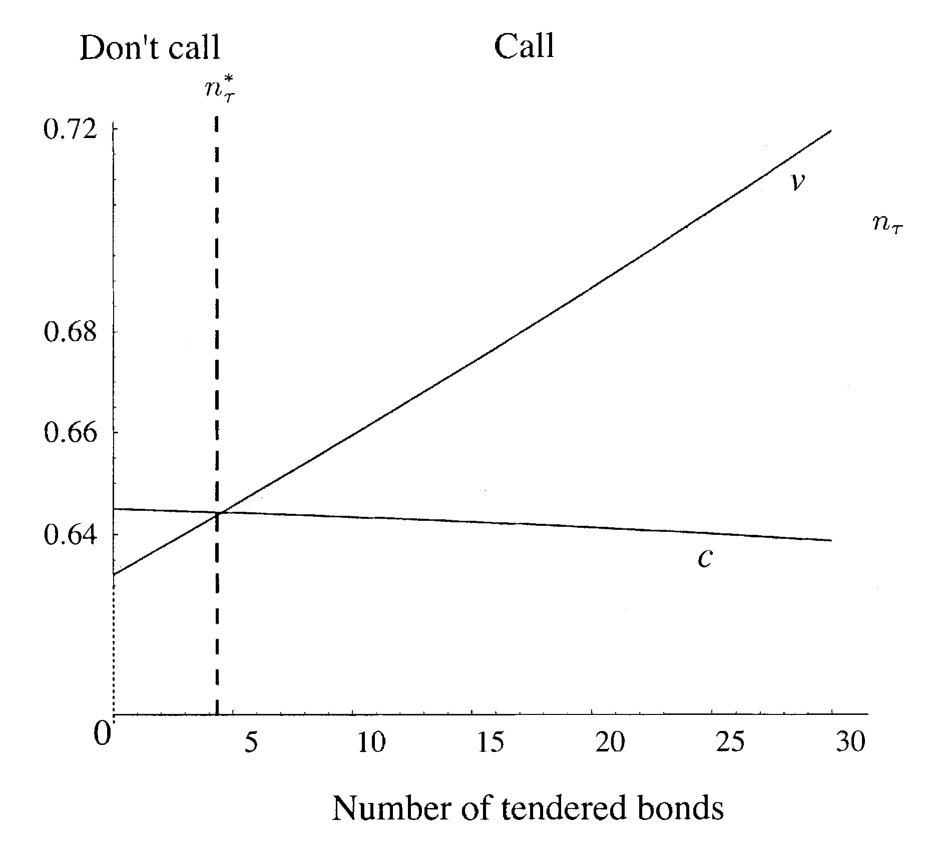
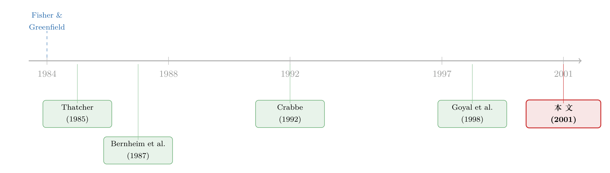

威胁要「全赎回」，债主该不该信？
本文读的是 Dhillon, Noe & Ramírez (2001, JFE)：当公司发出一份「同时招标—赎回」(Simultaneous Tender and Call, STAC) 要约——一边出价回购你手里的债，一边威胁「不交的全部按 call price 赎回」——这究竟是一道吓人的命令，还是一句吹牛？作者用一个三期博弈模型给出答案：威胁只有在「赎回真的对股东划算」时才可信；而当威胁不可信、债主又能串通时，STAC 必败。四个真实案例——May、James River、Houston Lighting & Power——几乎一一对上了模型的预言。
1 一个看似无解的难题
先讲一个让债主夜不能寐的处境。
你手里有一张面值 1000 美元的公司债，票息很高——因为它是上世纪七八十年代高利率年代发的，当时投资者唯恐公司哪天利率一降就把债提前赎回，于是逼着发行人写下一条 不可再融资条款 (nonrefundability covenant)：公司可以赎回这只债，但不准用利率更低的新债去筹这笔钱。换句话说，公司想赎回，就得拿出 干净现金 (clean cash)——来自资产出售、经营利润，或者增发股票的钱；而不能拿 脏现金 (dirty cash)——靠低息举债生出来的钱。
这条款在那个年代有多普遍？Thatcher (1985) 数过：1975 年上半年发行的 118 只债里，有 79 只带着这种不可再融资保证。到了 Crabbe (1992) 统计的 1992 年，市面上还有大约 $50 billion 的不可再融资债在流通。
然后利率掉头向下了。那些高息债，对公司来说成了一个沉重的、却又「赎不动」的包袱——因为赎回要烧干净现金，而干净现金又贵又少。
于是华尔街的投行（Morgan Stanley、Merrill Lynch、Goldman Sachs）设计出了 STAC：公司同时宣布两件事——第一，按略高于 call price 的价格招标回购你的债；第二，凡是不交的，要约结束后立刻全部按 call price 赎回。call price 往往远低于市价，所以「被赎回」是个坏消息。摆在你面前的是一道二选一：要么乖乖交券，拿那个略高于 call price 的招标价；要么死扛，但要面对「全部被低价赎回」的威胁。
这就是难题的张力所在：那句赎回威胁，到底是真的，还是吓唬人的？
2 真正的核心：威胁必须可信
接着，一个自然的问题是：公司说要赎回，它真的会赎回吗？
这正是本文的灵魂。作者一上来就立了一条规矩——他们只看 子博弈完美均衡 (subgame perfect equilibria)：一个威胁要有力量，前提是真到了那一步，做出威胁的人确实愿意把它执行。如果赎回根本不符合股东自己的利益，那么「不交我就赎回」这句话就只是一句空话，不构成任何约束。
为什么赎回可能不划算？因为赎回那些没人交的债，要按 call price 一只只付现金；干净现金不够，就得增发股票，而增发股票是有成本的——逆向选择的折价（这条暗线，可参见《价差是真的，成本却是假的——逆向选择究竟从哪里抬高了「要求回报」》）、税盾的损失，等等。股东要权衡：是忍痛掏出这笔贵钱去执行赎回，还是干脆让债继续挂着？
作者把这个权衡浓缩成一个条件，叫 可信承诺条件 (credible commitment condition)：
可信承诺条件，问的是这样一件事——即便没有一个债主肯交券，股东是不是仍然宁愿掏干净现金把债全赎回，也不愿让它继续挂着？ 如果答案是「是」，那这个威胁就是可信的。
这里有一个非常漂亮、也非常反直觉的结论：一旦可信承诺条件被满足，STAC 在每一个子博弈完美均衡里都成功——而且股东根本不必真的去赎回。 因为理性的债主一旦看清「你真敢赎」，就会抢着交券；既然大家都交了，股东也就省下了那笔赎回的成本。威胁之所以有用，恰恰是因为它从不需要被执行。
这一逻辑与银行救助里的「胆小鬼博弈」如出一辙（可参见《威胁，必须可信：一场银行「救还是不救」的胆小鬼博弈》）：能不能逼对方让步，从来不取决于你嗓门多大，而取决于你的威胁经不经得起「真到那一步」的推敲。
3 模型：一个三期、两期间的小世界
本文是一篇带理论模型的论文，模型本身简洁得近乎透明，我们一步步把它走一遍。
设定。 所有人风险中性，无风险利率为 0。三个日期、两个期间：
- 日期 0：公司有一只零息、不可再融资债在外，到期日是日期 2。股东先选定 STAC 的招标价 \(t\)。债主各自决定交不交券。
- 日期 1：股东决定——要么按 call price 把所有未交的债全部赎回，要么一只都不赎。赎回必须全部用干净现金支付（自有余额或增发股票）。
- 日期 2：随机现金流 \(\tilde X\) 实现，在股东与剩余债主之间分配。
公司有两种家底：日期 0 的现金余额（分为干净现金 \(L_0\) 与脏现金 \(D_0\)），以及日期 2 才到账的随机现金流 \(\tilde X \ge 0\)，其分布函数为 \(G\)、密度为 \(g\)。债一共 \(n\) 只，每只由不同的债主持有（所以有 \(n\) 个债主），面值都是 \(f\)，call price 为 \(\kappa\)。
两条关键的现金假设。其一：
$$\kappa \le L_0 < n\kappa$$
它的含义是——干净现金够赎回单独一个债主的债，但不够赎回整只发行。这是整个故事的引擎：少数人不交券，赎回他们很便宜；多数人死扛，赎回就要烧掉天量的、需要增发股票去补的干净现金。
其二，脏现金管够：
$$D_0 \ge nf$$
即招标回购环节即使按最高可能的招标价（面值 \(f\)）买下全部债券，公司也付得起——招标用的钱不受「干净现金」的限制。
再补一条：因为零息债的市价永远不会超过面值，要让赎回期权有价值，call price 必须低于面值，
$$\kappa < f$$
赎回的成本。 若日期 1 有 \(n_\tau\) 只债已被招标交出，则还剩 \(n - n_\tau\) 只。把它们全赎回要付 \((n-n_\tau)\kappa\) 的现金；干净现金 \(L_1=L_0\) 不够时，缺口要靠增发股票补上，而每一元外部股权融资带来 \(\iota \in [0,1]\) 元的成本。于是增发成本为（论文式 6）：
$$\iota \cdot \max\big[(n-n_\tau)\kappa - L_0,\; 0\big]$$
不赎回时的债券价值。 如果股东选择不赎，剩下 \(n-n_\tau\) 只债的总价值，就是这些债对日期 2 现金流 \(\tilde X\) 的索取权（论文式 3）：
$$V_1(n_\tau) = E\big[\min(\tilde X,\,(n-n_\tau)f)\big] = \int_0^{(n-n_\tau)f} \big(1 - G(x)\big)\,dx$$
单只债的 内在价值 (intrinsic value) 则是（论文式 4）：
$$v(n_\tau) = \frac{V_1(n_\tau)}{n - n_\tau}, \qquad n - n_\tau > 0$$
它就是「假设这债永远不会被赎回」时，市场会给它定的价。注意：信用风险越高，\(V_1\) 越低，赎回的诱惑就越小；票息越高（这里通过面值体现），\(V_1\) 越高，赎回的诱惑就越大。
4 关键的一步：日期 1 那个「赎还是不赎」的决策
但真正关键的一步，在于用倒推法去解日期 1 那个决策。
股东的目标，等价于最小化「付给债主的钱 + 增发成本」之和。所以在日期 1，面对已经剩下的 \(n-n_\tau\) 只债，他会去比较两条路：
- 赎：债主拿到 call price \((n-n_\tau)\kappa\)，股东额外承担增发的稀释成本 \(\iota\max[(n-n_\tau)\kappa - L_0, 0]\)；
- 不赎：债主拿到内在价值 \(V_1(n_\tau)\)。
于是日期 1 的赎回规则可以写成下面这个核心不等式——这也是全文的枢纽：
现在看出门道了：赎回是否划算，取决于剩下多少债。
当只有少数人死扛（\(n_\tau\) 大、\(n-n_\tau\) 小），要赎的债不多，干净现金 \(L_0\) 多半够用，稀释成本那一项是 0，赎回很便宜——所以股东会赎。可一旦多数人抗住（\(n_\tau\) 小、\(n-n_\tau\) 大），赎回要烧掉远超 \(L_0\) 的干净现金，稀释成本那一项陡然变大，赎回反而变得不划算——于是股东选择不赎。
这就是本文最迷人的机制：债主的抵抗是自我强化的 (self-reinforcing)。 你一个人抗，公司轻松赎掉你；可如果大家一起抗，公司反而下不去手。抵抗的人越多，威胁就越空。

Figure 2: Date 1 call decision. The horizontal axis represents the number of tendered bonds, n(cid:1)
如图 2 所示，横轴是已应募的债券数 \(n_\tau\)：当 \(n_\tau\) 跨过某个临界值、剩余债足够少时，落入「赎回」区；反之则落入「不赎」区。这条临界线，正是把「可信承诺」和「协调抵抗」两股力量分开的那道分水岭。
而所谓 可信承诺条件，不过是把这个不等式代到 \(n_\tau = 0\)（无人交券）这个极端：
$$E\big[\min(\tilde X,\,nf)\big] \;\ge\; n\kappa + \iota\,(n\kappa - L_0)$$
只要在「全员死扛」时赎回仍然划算，威胁就处处可信，STAC 必成。
5 于是反转出现：当威胁不可信，谁说了算？
然后，反转出现了。
如果可信承诺条件不满足呢？此时会冒出多重均衡——有的均衡里债主抵抗、STAC 失败，有的均衡里债主溃散、STAC 成功。到底落到哪一个，取决于债主能不能事前协调。
作者在这里请出了一个更挑剔的解概念：抗联盟纳什均衡 (coalition-proof Nash equilibrium, Bernheim, Peleg & Whinston, 1987)。它适用于债主之间沟通无限、无成本的情形——只考虑那些「任何子联盟都没有动机另起炉灶」的自我执行的结果。结论干净利落：
当可信承诺条件不满足、而债主又能彼此协调（沟通便宜、利益足够大）时，在所有抗联盟均衡里，STAC 都失败。 反过来，若协调不完美，即使威胁不可信，STAC 仍可能成功。
至此，整个理论收敛到两个支点：子博弈完美（威胁可不可信）与抗联盟性 / 事前协调（债主能不能串起来）。这一「协调」的力量，在信用市场里反复出现——评级机构的真正威力，也并不在于「说真话」，而在于「让所有人相信同一句话」（可参见《评级的真正力量，不在「说真话」，而在「让大家信同一句话」》）。
6 把理论按在四个真实案例上
理论再漂亮，也要回答那个开篇的元问题：博弈论究竟能不能解释真实世界里的公司博弈？ 作者拿四个真实的 STAC 来对账——May Department Stores 发起的两次、Houston Lighting & Power 一次、James River 一次。对每个案例，他们评估两件事：可信承诺条件满不满足，以及债主协调的前景如何。然后把模型的预言与真实结果对照。
- Houston Lighting & Power：四个案例里唯一满足可信承诺条件的。模型预言债主会乖乖交券、毫无抵抗——现实正是如此。
- May Department Stores（两次）：可信承诺条件不满足。债券持有高度集中，赌注极高（内在价值相对 call price 很高），所以 May 从成功 STAC 中能攫取的潜在收益、以及债主对应的潜在损失都很大；与此同时，融资赎回的稀释成本更高。于是「赎回收益大，但威胁不可信」，加上持有集中、协调容易——模型预言协调一致的债主抵抗。现实里观察到的，恰恰就是 May 遭遇的协调抵抗。
- James River：可信承诺条件同样不满足。但与 May 不同，股东的潜在收益（也即债主的潜在损失）更小，而债券持有要分散得多。协调的动机和协调的收益都更小——模型预言抵抗不会成形，尽管威胁同样不可信。现实里，James River 的 STAC 成功了。
四个案例，几乎一一对上。作者由此得出一个有分寸的结论：在 STAC 这种结构透明的情形里（玩家清晰、出手顺序由要约文件锁定、收益只剩债与股的经济价值，没有控制权私利、没有人力资本、没有经理努力成本来搅局），正式的博弈论分析确实能在临床层面提供实质性的洞见。言下之意也很诚实——如果连这种透明情形都解释不了，博弈论在更复杂的公司博弈里就更别指望了。
7 文献脉络
这条研究脉络，是三股水流的汇合。
第一股是制度与法律。 STAC 之所以存在，源于不可再融资条款的法律边界之争。关键判例是 Morgan Stanley & Co. vs. Archer Daniels Midland Co.（570 F. Supp. 1529, S.D.N.Y. 1983）：ADM 用「专款增发的股权」赎回了不可再融资债，法院以 sole-source test 支持了 ADM——只要赎回的钱明确来自干净、专门划拨的来源，无论公司此前借了多少低息债，都不算违约（同向判例还有 Franklin Life Insurance v. Commonwealth Edison, 1978）。Fisher & Greenfield (1984) 由此撰文，主张法院应把判决脚注里的逻辑往前推。Thatcher (1985) 与 Crabbe (1992) 则量出了这类条款在市场上的规模，Goyal, Gollapudi & Ogden (1998) 进一步研究了与之亲缘的 clawback 条款。
第二股是博弈论的解概念。 全文的两根支柱——子博弈完美与抗联盟性——直接取自 Bernheim, Peleg & Whinston (1987) 关于抗联盟均衡的奠基工作，以及后续 Moreno & Wooders (1996)、Ferreira (1999) 的讨论。
第三股是股权增发的成本。 赎回威胁可不可信，最终落到「增发股票有多贵」这个 \(\iota\) 上；这背后是 Asquith & Mullins (1986)、Masulis & Korwar (1986)、Smith (1986) 关于增发折价与稀释的经典证据，以及 Lee, Lockhead, Ritter & Zhao (1996) 对募资成本的测算。

而本文真正的坐标，是它所属的那场方法论运动——这篇文章出自 JFE 与哈佛商学院合办的「互补研究方法论」会议专辑，与 Chacko, Tufano & Verter (2001) 对 Cephalon 的临床研究并肩。它们共同回答的，不是「某个模型对不对」，而是一个更朴素也更难的问题：形式化的理论，能不能像物理学家解说足球赛那样，真的帮我们看懂一场具体的博弈？
8 评论与延伸（Q&A + 研究方向）
(a) 几个可能的疑问
Q：这跟普通的可赎回债定价模型（如 Kalotay-Williams-Fabozzi 那一类）有什么不同？
定价模型把赎回看成一个由利率驱动的、机械执行的期权——到了价内就赎。本文的核心恰恰相反：赎回不是机械触发的，而是股东在日期 1 重新算一笔账的战略决策。同一只债，威胁可不可信，取决于还剩多少人没交券、增发有多贵。这是「期权定价」与「博弈均衡」的分野。
Q：「可信承诺条件满足 ⇒ STAC 必成，且股东无需真的赎回」，这不矛盾吗？
不矛盾，这正是子博弈完美的妙处。威胁的价值在于它经得起推敲：债主一旦推演到「真到日期 1，股东确实会赎」，理性反应就是抢先交券；既然都交了，赎回那一步就永远不会被触发。威胁因为可信而生效，又因为生效而无需执行。
Q：四个案例就能「验证」一个理论吗？样本会不会太小？
这正是临床研究 (clinical study) 方法的取舍。作者也很坦诚——这不是标准的计量检验（那回答的是「模型是否统治了这个现象」），而是回答「模型能否为场内的当事人提供有用的洞见」。四个案例的价值在于它们覆盖了模型的三种预言（可信→成功、不可信且集中→协调抵抗、不可信但分散→成功），且都对上了；说服力来自预言的多样性，而非样本量。
Q：模型假设干净现金规模是共同知识，可现实里恰恰是模糊的，这会不会要命？
作者讨论过这点。若是对称但不确定的信息，债主用期望值决策即可，结论不变；真正会改写故事的是「股东对干净现金有私人信息」——那样 STAC 本身就成了一个信号。但作者认为，干净现金的不确定性主要来自「法院会怎么认定」，而所有可能的认定都基于公开会计信息，股东并不占信息优势。这个判断是否成立，是模型外推时的一个真实软肋。
Q：为什么 May 的抵抗成功、James River 的抵抗失败，关键真的是「持有集中度」吗？
在模型里，集中度通过两条渠道起作用：一是协调成本（持有越集中，串通越便宜），二是协调收益（赌注越大，值得去协调）。May 两者都高，James River 两者都低。这是一个内部自洽的解释，但它与「赌注大小」高度缠绕——现实中很难把「人少」和「钱多」干净地分开，这也是后续实证可以发力的地方。
Q：STAC 对债主到底是不是「掠夺」？
从债主视角，被低价赎回当然是损失；STAC 的设计本意就是绕开「用增发股票赎回」的高成本，让股东以更小代价拿回赎回收益。但本文的洞见是：债主并非束手无策——只要威胁不可信且他们能协调，就能集体把 STAC 顶回去。这与「死亡螺旋可转债」里股东借工具稀释债权人的故事互为镜像（可参见《说好了「保护股东」，怎么反手把股价绞死了？——死亡螺旋可转债的两副面孔》）。
(b) 几个可能的研究问题与提案
1. 用现代公司债持有数据，把「协调假说」做成大样本检验。 - 【经济故事】本文的核心可检验命题是：在威胁不可信的 STAC（或更广义的强制要约/exchange offer）里，债主持有越集中，抵抗越可能成形、要约越可能失败。 - 【可行性】中。需要 eMAXX / Lipper 的债券持有人层面数据来度量集中度，配合 Mergent FISD 识别带赎回/招标条款的发行，事件研究法看要约成败与价格反应。难点在于「威胁可信度」的度量——需要重构每只债的 clean cash 可得性，这部分数据较难，但可用现金、留存收益等会计代理。
2. 把「赎回威胁的可信度」量化成一个连续变量，预测要约溢价。 - 【经济故事】模型给出了可信承诺条件的闭式表达式：\(E[\min(\tilde X,nf)]\) 对 \(n\kappa+\iota(n\kappa-L_0)\)。能不能据此构造一个「可信度指数」，预测公司必须给出多高的招标溢价才能成功？威胁越可信，所需溢价越低。 - 【可行性】中。内在价值可用市价或结构模型估计，\(\iota\) 可用同期增发折价代理，\(L_0\) 用现金类资产近似。识别上的关键挑战是内生性——溢价与可信度同时由公司基本面决定，需要找一个只影响 \(\iota\) 不直接影响溢价的工具（如行业层面的增发市场冷热）。
3. 外资债主与协调失败。 - 【经济故事】本文的协调机制假设债主沟通无限、无成本。但当债主里有相当比例的跨境/外资持有人时，沟通与协调天然更难、利益更分散——这恰好预言：外资占比越高的发行，强制要约越容易成功。这把「外资持有人」这条线接到了信用市场的微观结构上。 - 【可行性】中。需要债券持有人国籍信息（部分可从 13F-类披露或托管数据近似），识别上可借助 index 纳入/剔除带来的外资持有外生变动。诚实地说，债券持有人国籍数据的覆盖度是最大瓶颈。
4. 把模型从零息债扩展到含息债与部分赎回（clawback）。
- 【经济故事】本文为简化用了零息债（因此 \(\kappa
9 参考文献
Asquith, P., Mullins, D. (1986). Equity issues and offering dilution. Journal of Financial Economics 15(1-2), 61–91.
Bernheim, D., Peleg, B., Whinston, M. (1987). Coalition-proof Nash equilibria I: Concepts. Journal of Economic Theory 42(1), 1–12.
Chacko, G., Tufano, P., Verter, C. (2001). Cephalon, Inc.: Taking risk management seriously. Journal of Financial Economics 60(2-3), 449–485.
Crabbe, L. (1992). Callable corporate bonds: A vanishing breed? (As reported in the Wall Street Journal, Nov. 2, 1992.)
Dhillon, U. S., Noe, T. H., Ramírez, G. G. (2001). Bond calls, credible commitment, and equity dilution: A theoretical and clinical analysis of simultaneous tender and call (STAC) offers. Journal of Financial Economics 60(2-3), 573–611.
Fisher, C., Greenfield, J. (1984). Refunding provisions and the Archer Daniels Midland case. Business Lawyer 39, 1671–1684.
Goyal, V., Gollapudi, N., Ogden, J. (1998). A corporate bond innovation of the 90s: The clawback provision in high-yield debt. Journal of Corporate Finance 4(4), 301–320.
Lee, I., Lockhead, S., Ritter, J., Zhao, Q. (1996). The costs of raising capital. Journal of Financial Research 19(1), 59–74.
Masulis, R., Korwar, A. (1986). Seasoned equity offerings: An empirical investigation. Journal of Financial Economics 15(1-2), 91–118.
Smith, C. (1986). Investment banking and the capital acquisition process. Journal of Financial Economics 15(1-2), 3–29.
Thatcher, J. (1985). The choice of call provision terms: Evidence of the existence of agency costs of debt. Journal of Finance 40(2), 549–561.